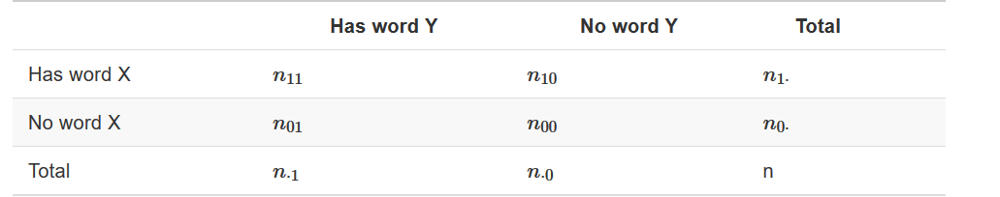
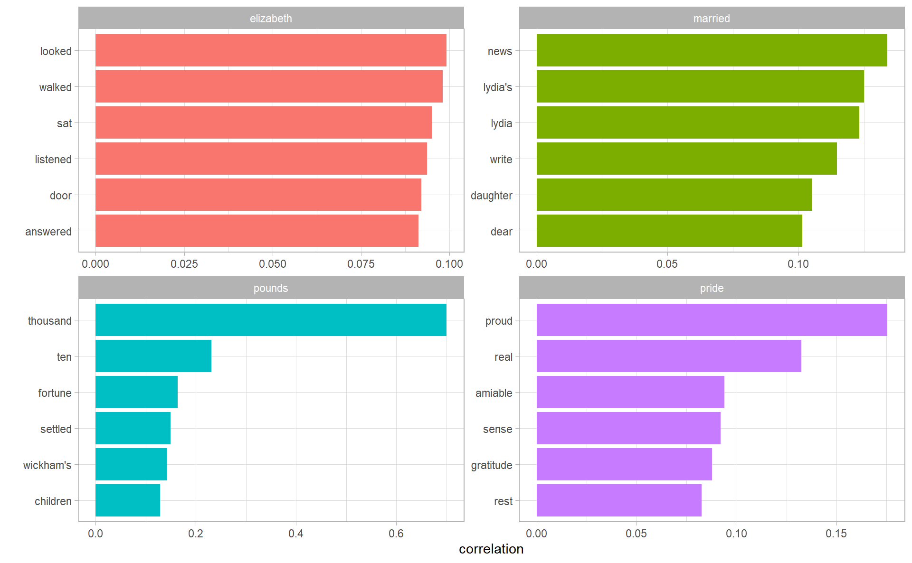

4.2 Counting and correlating pairs of words with widyr
Tokenizing by n-gram is a useful way to explore pairs of adjacent words. However, we may also be interested in words that tend to co-occur within particular documents or particular chapters, even if they don’t occur next to each other.
For this reason, it is sometimes necessary to “cast” a tidy dataset into a wide matrix (such as a co-occurrence matrix), performs an operation such as a correlation on it, then re-tidies the result. This is when widyr comes to the rescue, the workflow is shown in the book:

4.2.1 Counting and correlating among sections
We devide the book “Pride and Prejudice” into 10-line sections , as we did for Section 2.2 (80 lines). We may be interested in what words tend to appear within the same section.
austen_section_words <- austen_books() %>%
filter(book == "Pride & Prejudice") %>%
mutate(section = row_number() %/% 10) %>%
filter(section > 0) %>%
unnest_tokens(word, text) %>%
filter(!word %in% stop_words$word)
austen_section_words
#> # A tibble: 37,240 x 3
#> book section word
#> <fct> <dbl> <chr>
#> 1 Pride & Prejudice 1 truth
#> 2 Pride & Prejudice 1 universally
#> 3 Pride & Prejudice 1 acknowledged
#> 4 Pride & Prejudice 1 single
#> 5 Pride & Prejudice 1 possession
#> 6 Pride & Prejudice 1 fortune
#> # ... with 3.723e+04 more rowswidyr::pairwise_counts() counts the number of times each pair of items appear together within a group defined by “feature”. In this case, it counts the number of times each pair of words appear together within a section, note it still returns a tidy data frame, although the underlying computation took place in a matrix form :
library(widyr)
austen_section_words %>%
pairwise_count(word, section, sort = TRUE)
#> # A tibble: 796,008 x 3
#> item1 item2 n
#> <chr> <chr> <dbl>
#> 1 darcy elizabeth 144
#> 2 elizabeth darcy 144
#> 3 miss elizabeth 110
#> 4 elizabeth miss 110
#> 5 elizabeth jane 106
#> 6 jane elizabeth 106
#> # ... with 7.96e+05 more rowsWe can easily find the words that most often occur with Darcy. Since pairwise_count records both the counts of (word_A, word_B) and (word_B, word_B), it does not matter we filter at item1 or item2
austen_section_words %>%
pairwise_count(word, section, sort = TRUE) %>%
filter(item1 == "darcy")
#> # A tibble: 2,930 x 3
#> item1 item2 n
#> <chr> <chr> <dbl>
#> 1 darcy elizabeth 144
#> 2 darcy miss 92
#> 3 darcy bingley 86
#> 4 darcy jane 46
#> 5 darcy bennet 45
#> 6 darcy sister 45
#> # ... with 2,924 more rows4.2.2 Pairwise correlation
Pairs like “Elizabeth” and “Darcy” are the most common co-occurring words, but that’s not particularly meaningful since they’re also the most common individual words. We may instead want to examine correlation among words, which indicates how often they appear together relative to how often they appear separately.
In particular, we compute the \(\phi\) coefficient. Introduced by Karl Pearson, this measure is similar to the Pearson correlation coefficient in its interpretation. In fact, a Pearson correlation coefficient estimated for two binary variables will return the \(\phi\) coefficient. The phi coefficient is related to the chi-squared statistic for a 2 × 2 contingency table
\[ \phi = \sqrt{\frac{\chi^2}{n}} \]
where \(n\) denotes sample size. In the case of pairwise counts, \(\phi\) is calculated by

\[ \phi = \frac{n_{11}n_{00} - n_{10}n_{01}}{\sqrt{n_{1·}n_{0·}n_{·1}n_{·0}}} \]
We see, from the above quation, that \(\phi\) is “standarized” by individual counts, so various word pair with different individual frequency can be compared to each other:
The computation of \(\phi\) can be simply done by pairwise_cor (other choice of correlation coefficients specified by method). The procedure can be somewhat computationally expensive, so we filter out uncommon words
word_cors <- austen_section_words %>%
add_count(word) %>%
filter(n >= 20) %>%
select(-n) %>%
pairwise_cor(word, section, sort = TRUE)
word_cors
#> # A tibble: 154,842 x 3
#> item1 item2 correlation
#> <chr> <chr> <dbl>
#> 1 bourgh de 0.951
#> 2 de bourgh 0.951
#> 3 pounds thousand 0.701
#> 4 thousand pounds 0.701
#> 5 william sir 0.664
#> 6 sir william 0.664
#> # ... with 1.548e+05 more rowsWhich word is most correlated with “lady”?
word_cors %>%
filter(item1 == "lady")
#> # A tibble: 393 x 3
#> item1 item2 correlation
#> <chr> <chr> <dbl>
#> 1 lady catherine 0.663
#> 2 lady de 0.283
#> 3 lady bourgh 0.254
#> 4 lady ladyship 0.227
#> 5 lady lucas 0.198
#> 6 lady collins 0.176
#> # ... with 387 more rowsThis lets us pick particular interesting words and find the other words most associated with them
word_cors %>%
filter(item1 %in% c("elizabeth", "pounds", "married", "pride")) %>%
group_by(item1) %>%
top_n(6) %>%
ungroup() %>%
facet_bar(y = item2, x = correlation, by = item1)
How about a network visualization to see the overall correlation pattern?
word_cors %>%
filter(correlation > .15) %>%
as_tbl_graph() %>%
ggraph(layout = "fr") +
geom_edge_link(aes(edge_alpha = correlation), show.legend = FALSE) +
geom_node_point(color = "lightblue", size = 5) +
geom_node_text(aes(label = name), repel = TRUE)
Note that unlike the bigram analysis, the relationships here are symmetrical, rather than directional (there are no arrows). We can also see that while pairings of names and titles that dominated bigram pairings are common, such as “colonel/fitzwilliam”, we can also see pairings of words that appear close to each other, such as “walk” and “park”, or “dance” and “ball”.